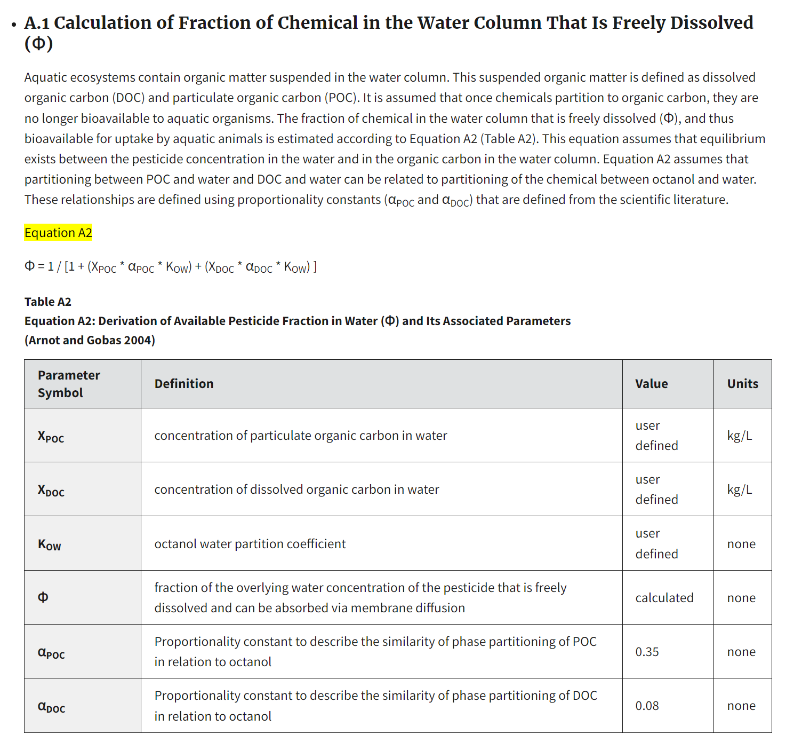
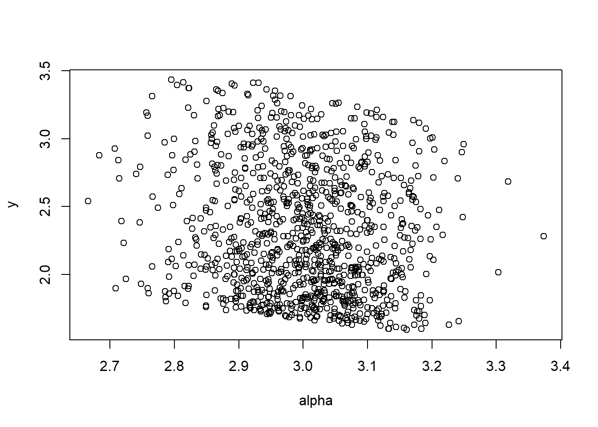
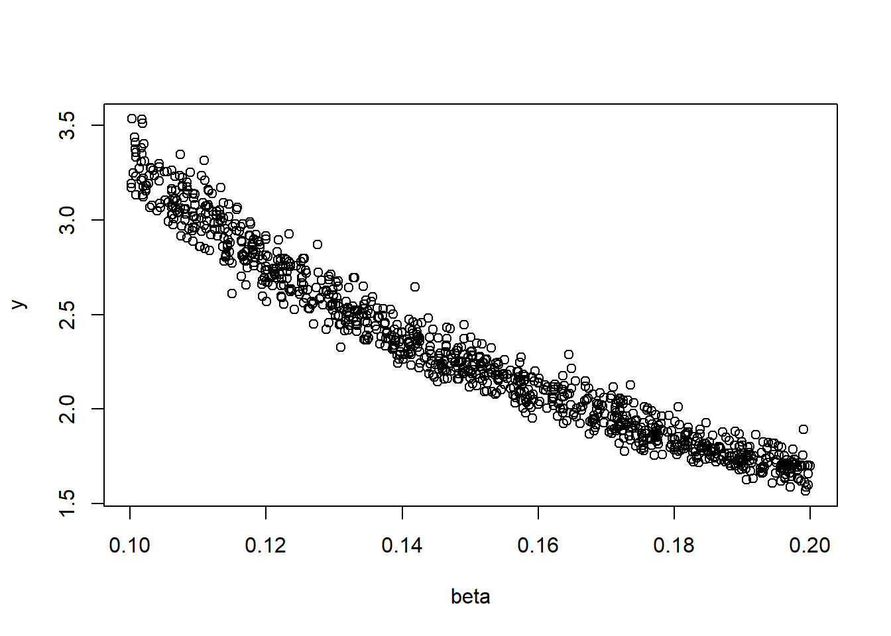
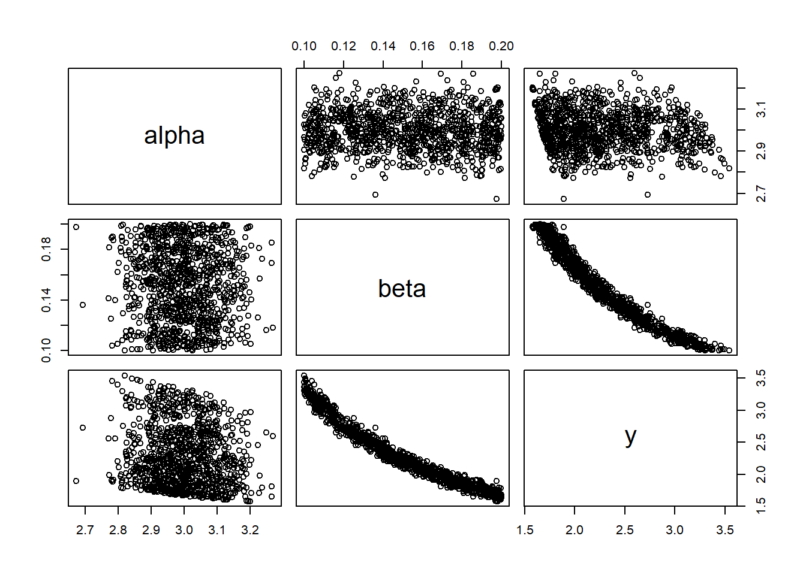

niter = 10^3
z = 1
alpha = rnorm(niter,3,0.1)
beta = runif(niter,0.1,0.2)
y = 1/(z*alpha*beta)Exercise. Exposure assessment using a model for bioaccumulation
MVEN10 Risk Assessment in Environment and Public Health
Exercise overview
Do in groups of 1-3
Background
Models are often used in risk assessments, and to allow for critical evaluation of a model including methods associated with the model, or reproduction of the modelling, they should be described in a clear way.
Monte Carlo simulation is a method that can be used to propagate uncertainty in a mathematical model. A careful description of a Monte Carlo simulation is not only needed for transparency and reliability of the results, but it is often a opportunity to resolve uncertainties associated to a description of a model.
Sensitivity analysis is applied to evaluate the influence of sources to uncertainty on the quantity of interest. It is recommended for use in uncertainty analysis to identify what information to collect to reduce uncertainty.
Methods for sensitivity analysis range from qualitative to quantitative, and from local (considering the influence from sources of uncertainty one at a time) and global (considering the influence of sources of uncertainty in combination). A quantitative sensitivity analysis can be to change a parameter value up and down 10% from its nominal value and see how much it changes the quantity of interest.
Given a quantitative uncertainty analysis where parameter uncertainty is described by probability distributions, their influence on the quantity of interest can e.g. be explored
graphically using scatter plots, and
by calculating sensitivity metrics and compare them.
It is recommended to combine a graphical visualisation with sensitivity metrics.
Bioaccumulation is the increase in the concentration of a chemical in a biological organism over time. Both human and ecological/environmental risk assessments consider bioaccumulation processes for exposure assessment.
Purpose
To practice describing a Monte Carlo simulation used to propagate uncertainty in parameters of a mathematical model.
To apply sensitivity analysis to evaluate the influence of parameters on uncertainty in a quantity of interest.
To explore common models for bioaccumulation.
Content
- Printed table
Duration
45 minutes
Reporting
Be prepared to report back at the end of the exercise.
References
US EPA, KABAM Version 1.0 User’s Guide and Technical Documentation - Appendix A - Description of Bioaccumulation Model https://www.epa.gov/pesticide-science-and-assessing-pesticide-risks/kabam-version-10-users-guide-and-technical-7
Information about Monte Carlo simulation and sensitivity analysis at the EFSA Tutorial on Uncertainty
Bioaccumulation model
Go to the US EPA’s page with a description of Bioaccumulation a model.
The model presented can be used to assess various quantities of interest related to bioaccumulation at different trophic levels.
The recommended approach is to first calculate the concentration in organisms at the lowest level of the aquatic food chain (i.e. phytoplankton) before calculating concentrations at higher levels.
The page describes several equations to calculate different quantities of interest.
Useful model terminology
- Go to the part of the Bioaccumulation model referred to as A.1 Calculation of Fraction of Chemical in the Water Column That Is Freely Dissolved and identify the following:
The mathematical model
The parameters within the model
Input variables or arguments to the model
The output from the model
The quantity of interest

Uncertainty analysis
Plan
Your boss has given you the tasks to perform a quantitative uncertainty analysis (using Monte Carlo simulation) of this model and to identify the parameter with the highest influence to uncertainty in the quantity of interest.
Make a plan on how to perform the Monte Carlo simulation. Describe the setting for the Monte Carlo simulation, in particular for which model components you will specify probability distributions (you do not have to come up with the distributions now). Create a new table similar to Table A4 that can be used when you report back to your boss.
Discuss you plan with the tutor for feedback
If there is time, you have at the end of, or after, the exercise, the possibility to execute the Monte Carlo simulation using e.g. R or Excel.
Sensitivity analysis
We will start exploring two quantitative methods for sensitivity analysis using a simple model. Then, if there is time, you will be asked to apply it on the selected part of the US EPA Bioaccumulation model.
A model
- Define a model with two parameters (\(\alpha\) and \(\beta\)) calculating \(y\) given the input variable \(z\)
\[y = \frac{1}{z\cdot\alpha\cdot\beta}\]
We have the following information
| Symbol | Definition | Value | Unit |
|---|---|---|---|
| \(z\) | input variable | user defined | kg/L |
| \(\alpha\) | parameter | 3 | none |
| \(\beta\) | parameter | 0.2 | none |
| \(y\) | quantity of interest | calculated | kg/L |
Uncertainty in parameters are specified to be
| Parameter | Probability distribution |
|---|---|
| \(\alpha\) | N(3,0.1) |
| \(\beta\) | U(0.1,0.2) |
We set up a Monte Carlo simulation sampling from the parameter distributions and propagating this uncertainty to the quantity of interest for a given value on the input variable \(z\). Here we set \(z = 1\).
Graphical visualisation of the influence of parameters on a quantity of interest
- Make scatter plots with the sampled parameters values on the x-axis and the simulated values of the quantity of interest on the y-axis
plot(y~alpha)
plot(y~beta)
- From looking at these graphs, which of the parameters do you think have the most contribution to uncertainty in the quantity of interest? influential?
To get a better overview one can produce a matrix of scatter plots
df <- data.frame(alpha = alpha, beta = beta, y = y)
plot(df)
Derivation of metrics for sensitivity
Sensitivity can be measured in several ways. One option is to calculate the correlation between the sampled values for the parameter and the simulated values for the quantity of interest
- Calculate the correlation
cor(alpha,y)[1] -0.1557607cor(beta,y)[1] -0.9697208Or do it in one go
cor(df) alpha beta y
alpha 1.00000000 -0.01258714 -0.1557607
beta -0.01258714 1.00000000 -0.9697208
y -0.15576066 -0.96972080 1.0000000- Considering the correlation, which parameter contributes most to uncertainty in the quantity of interest?
Execute Monte Carlo simulation and perform sensitivity analysis
If you have the time, implement your Monte Carlo simulation on the first bioaccumulation model and identify the most influential parameter.